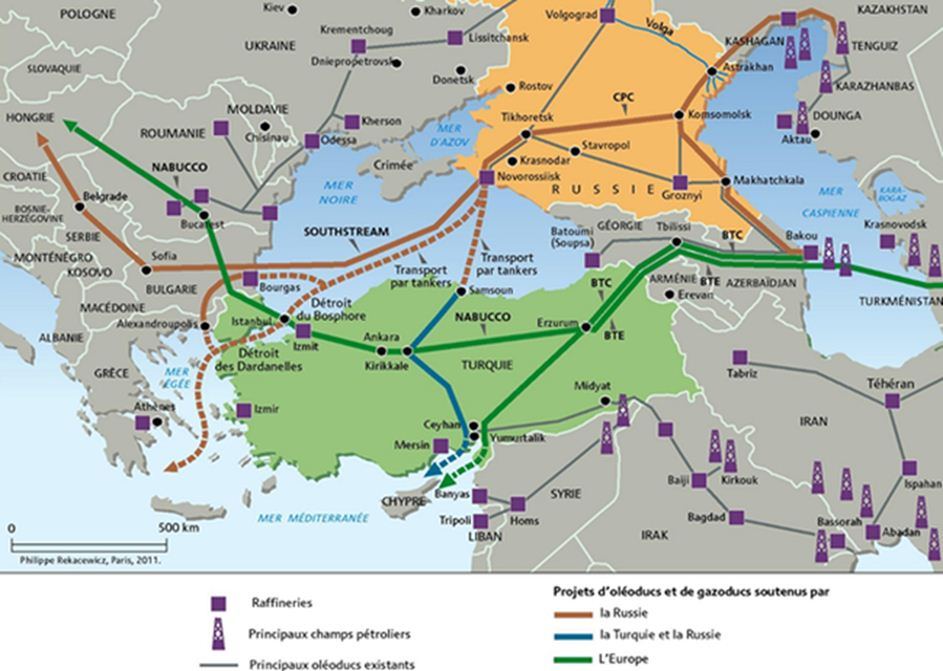
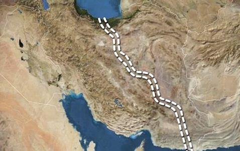

Contrairement à une idée largement répandue en Europe de l’ouest, la Russie n’a, de tout temps, jamais eu pour objectif prioritaire de développer son empire vers l’occident, mais bien vers l’Asie et notamment l’Asie centrale validant par là-même l’adage édicté en 1904 par le célèbre géographe britannique Halford Mackinder : « qui contrôle l’Asie centrale, contrôle le Monde ».
Au confins de cette Asie centrale et du Caucase se trouve la plus grande mer intérieure de la planète, la Mer Caspienne, dotée de plus de 6000 kilomètres de côtes et aujourd’hui théâtre de grands enjeux géopolitiques, économiques et stratégiques impliquant ses pays riverains que sont la Russie, l’Azerbaïdjan, le Kazakhstan, le Turkménistan et enfin l’Iran.
La Russie ayant été et restant la plus grande puissance de la région, ses ambitions d’accès aux mers chaudes du sud n’ont pas été sans déplaire à l’empire Perse, et ce, dès 1723 avec la fondation par Pierre le Grand de la première base navale russe à Astrakhan. Malgré la signature du traité de « paix et d’amitié » de Rasht en 1729, s’ensuivirent des années de conflit et de défaites perses durant la guerre « russo-perse » de 1804 à 1813 et qui se soldèrent par la perte de territoires du sud-Caucase (dont le Daguestan) à la suite des traités du Golestân (1813) et de Turkomanchaï (1828), interdisant également à la Perse de faire naviguer toute flotte militaire sur les eaux de la Caspienne.
Cette situation ne fût modifiée qu’en 1921 avec un nouveau traité de paix entre la Perse et l’URSS et confirmée en mars 1940 par un accord de commerce et de navigation entre les deux pays, et qui, en écartant tout autre pays tiers, donna de fait à la mer Caspienne son caractère exclusivement « Irano-Soviétique ».
La fin du XXème siècle et ses bouleversements géopolitiques (révolutions islamique en Iran en 1979 et surtout chute de l’URSS en 1991) ainsi que la découverte de gisements d’hydrocarbures amèneront de nouveaux acteurs sur l’échiquier de la mer Caspienne tout en posant la question cruciale du statut juridique de cette étendue maritime.
Du rôle de voie navigable à celui de zone stratégique
Longtemps théâtre d’affrontements russo-iranien, la Caspienne n’était pourtant considérée que comme une voie navigable favorisant les échanges commerciaux et comme réserve halieutique puisque très poissonneuse (dont le célèbre esturgeon et son caviar). La découverte d’importants gisements d’hydrocarbures au début du XXIème siècle (entre 17 et 33 milliards de barils et 6630 milliards de m3 de gaz selon une étude du département américain de l’énergie en 2004) place la Caspienne au niveau du Qatar et de l’Arabie Saoudite, ce qui, modifie totalement l’aspect géopolitique du lieu et l’outil de puissance qu’il peut devenir pour ses états riverains issus de l’éclatement de l’URSS (Kazakhstan, Azerbaïdjan et Turkménistan) tout en suscitant bien entendu les convoitises des Etats-Unis toujours soucieux d’imprimer leur influence sur les zones à fort potentiel énergétique ; d’ailleurs en 1997 dans son livre « le grand échiquier », Zbigniew Brzezinski, l’ancien conseiller à la sûreté du président Jimmy Carter, avait écrit : « Une puissance qui domine l’Eurasie contrôlerait les deux tiers des régions les plus avancées et économiquement les plus productives du monde. En Eurasie se concentrent environ les trois quarts des ressources énergétiques connues du monde. »
Cependant, deux problèmes subsistent, le premier concerne le statut juridique de la Caspienne qui n’est toujours pas considérée comme une mer au sens du droit international (affectation de ZEE) mais plutôt comme un lac à la redistribution des richesses plutôt flou et le second résidant dans son enclavement géographique au milieu de zones montagneuses obligeant nécessairement la traversée de pays tiers pour approvisionner les pays clients potentiels, notamment l’Europe et dans ces pays tiers se trouve un adversaire commun de la Russie et de l’Iran : la Turquie.
En effet, la Turquie à la fois de manière terrestre de par sa position eurasiatique, et maritime par le contrôle qu’elle opère sur les détroits de la Mer Noire depuis 1936, est en mesure d’exercer une influence plus ou moins coercitive sur les projets de construction d’oléoducs et de gazoducs en provenance de Russie, d’Azerbaïdjan et bien entendu d’Iran, malgré l’abandon des projets Southstream et Nabucco (remplacés par le projet « Turkishstream » lancé en 2014 par Vladimir Poutine), mais aussi sur le trafic maritime commercial et militaire transitant par le Bosphore et les Dardanelles.
Toutefois, depuis 2014 et l’embrasement du conflit syrien, les relations entre la Turquie et la Russie se sont nettement détériorées suite à la politique islamo-nationaliste du président Erdogan et ses provocations allant jusqu’à la destruction en vol du chasseur SU-24 russe par des F-16 turcs.
Quant à l’Iran, fidèle soutien du président Bachar Al Assad et du régime Alaouite, on connait depuis longtemps l’animosité entre les deux anciens empires, Perse et Ottoman, notamment sur le plan religieux.
Là encore, lors de l’intervention russe contre les groupes terroristes en Syrie, la mer Caspienne a revêtu un intérêt stratégique tout particulier puisque il a permis à la flotte de tirer 26 missiles de croisière de type 3M14 en direction de la Syrie depuis la frégate Daghestan et les corvettes Grad Sviajsk, Ouglitch et Veliki Oustioug.
Vers un partenariat stratégique pour la construction d’un canal ?
Pour toutes ces raisons (smart power des Etats-Unis, conflits et menaces avec la Turquie), mais aussi influence de la Chine de plus en plus attirée par les ressources énergétiques du Caucase, pourrions-nous assister, non pas à une alliance entre la Russie et l’Iran mais à un véritable partenariat stratégique ?
Depuis la levée partielle des sanctions internationales à l’encontre de l’Iran en 2015, le Monde redécouvre un pays en fort devenir, riche de 80 millions d’habitants, jeunes et au taux d’éducation élevé et qui a su, malgré les sanctions, conserver une industrie performante et consacrer 4 % de son PIB à la recherche, qui lui pointe à la 27ème place mondiale entre la Belgique et la Norvège.
A ce titre, Vladimir Poutine a autorisé pour avril 2016 la livraison des systèmes de défense anti-aérienne S300 après 5 années de blocage ouvrant ainsi la porte à de plus grands partenariats commerciaux entre les deux pays, car le volume d’échange d’un montant d’environ 1 milliard de dollars en 2014 est relativement faible au regard des 3 milliards allemands et des 50 milliards….chinois !
Nul doute que l’Iran, grâce au nouvel essor économique promis par la levée des sanctions ne va pas vouloir rester la puissance régionale qu’il est, mais bien devenir une grande puissance économique, militaire et diplomatique notamment au Moyen-Orient en faisant face à la fois à la Turquie et à l’Arabie Saoudite.
Avec de telles ambitions, légitimes au regard de l’histoire Perse, on ne peut envisager le terme d’alliance avec la Russie, mais plutôt de partenariat « gagnant – gagnant » et le cas précis de la mer Caspienne peut en être un bon exemple.
En ce sens, le projet (ancien) de construction d’un double canal reliant la mer Caspienne au golfe persique, une sorte de « Canal de Suez perse » serait une excellente opportunité de collaboration entre les deux pays.
Le projet, approuvé par l’ancien président Mahmoud Ahmadinejad en 2012 avait été évalué à coût d’environ 7 milliards de dollars. Il permettrait aux navires de commerce mais aussi à la flotte militaire russe un accès direct à l’Océan Indien en s’affranchissant des détroits de la Mer Noire et aussi du Canal de Suez laissant ainsi une plus grande marge de manœuvre stratégique tout en bénéficiant aux autres pays riverains totalement enclavés et dont les seules rives maritimes sont en Caspienne. Du côté iranien, on vante quelques 2 millions d’emplois qui pourraient être créés ainsi qu’un usage des eaux pour l’irrigation de l’Iran oriental victime d’une violente sécheresse depuis des années, et ce projet titanesque est perçu comme un véritable poumon économique.
Bien entendu, les écueils sont nombreux, à commencer par le financement, sachant que les banques internationales et surtout occidentales risquent toujours des sanctions à investir en Iran et que l’usage du Dollars y est prohibé par les Etats-Unis, qui d’ailleurs, tout comme la Turquie, sont opposés à ce projet. Viennent ensuite les problématiques techniques de creusement d’un ouvrage en zone montagneuse, aride et sismique et les risques écologiques.
En tout état de cause, la Russie possède aujourd’hui les compétences et les capacités à financer un tel projet sur une décennie, à elle de saisir cette opportunité faute de quoi d’autres pays et plus particulièrement la Chine à la recherche d’une nouvelle « route de la soie » pourraient s’en charger.
Partager cette page